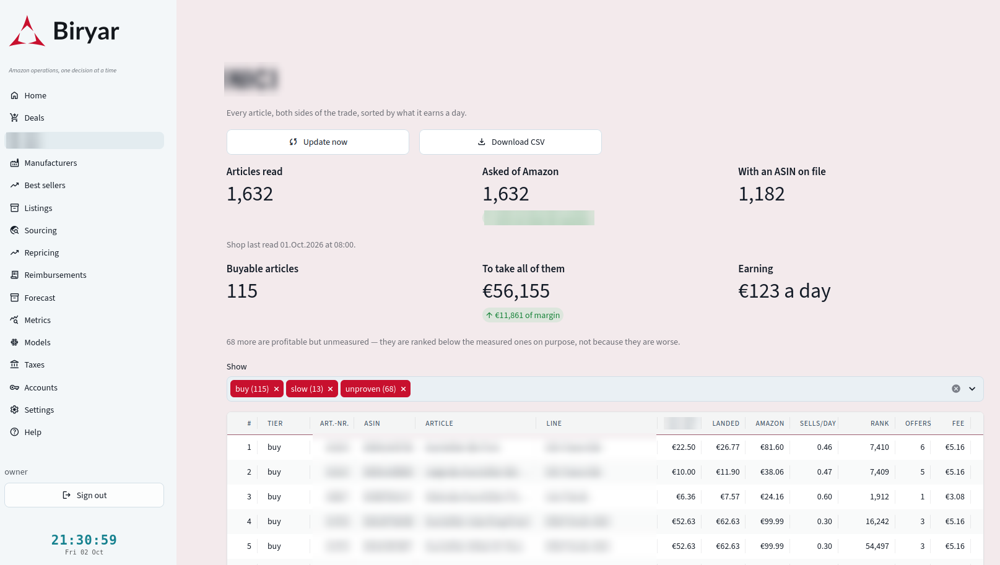
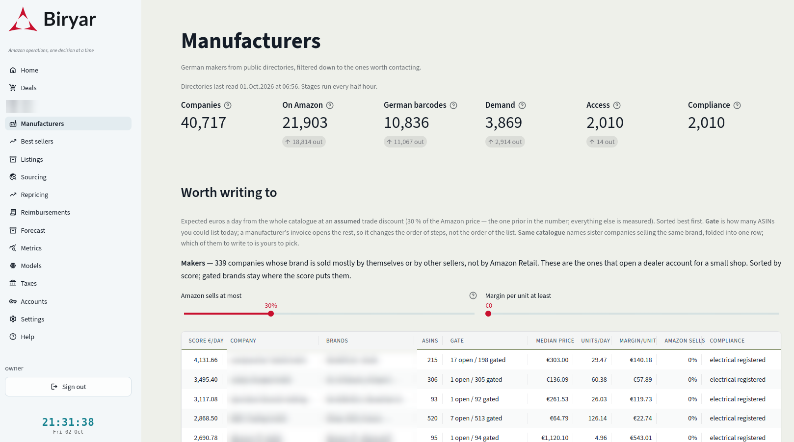
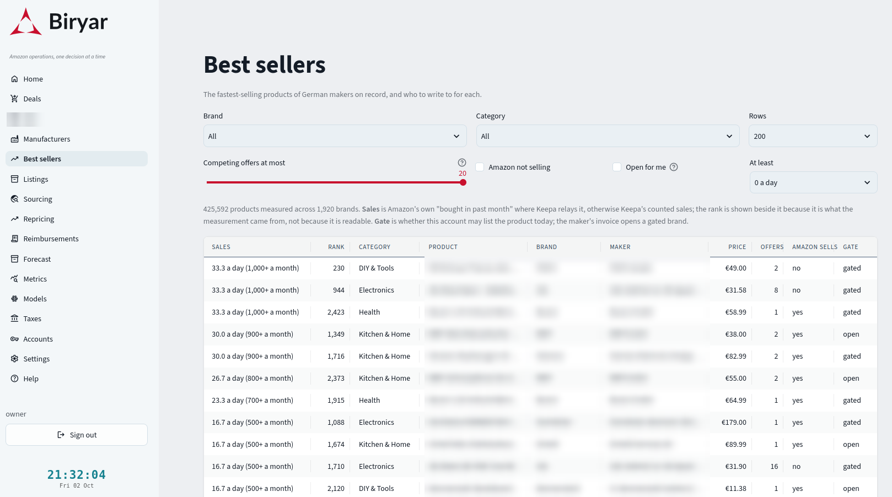

Every middleman between a factory and an Amazon customer takes a margin. This report follows Biryar as it climbs towards the factory, first through two suppliers it knows well and then through a census of every German maker it could find, and asks what is gained and what new costs appear with each step.
Shops are where reselling starts, and Parts 1 and 2 of this series showed how thin and how restricted that ground is. Going upstream removes intermediaries and their margins, but it replaces them with obligations, trade accounts, packing units, minimum orders and safety paperwork. Biryar handles the upstream in three ways. It reads the dealer shops of suppliers it already trades with and turns their catalogues into ranked order lists. It screens wholesale assortments before an account is even opened, to learn whether the trade terms can ever pay. And it builds a census of German manufacturers from public registers, 125,626 companies, filtered down to roughly two thousand that sell on Amazon, make German products, have measurable demand and could be written to.
A product sold on Amazon by a reseller usually passes through several hands. The manufacturer sells to a wholesaler, the wholesaler to a shop, the shop to the reseller, and each of them adds a margin to cover its costs and earn a living. Spengler showed in 1950 that a chain of independent firms, each pricing for its own margin, ends with a higher final price and lower joint profit than a single firm would choose, an effect now called double marginalisation [1]. For a reseller the practical reading is simpler. Every link removed is a margin that no longer has to be paid.
The reason intermediaries exist at all is the other half of the story. Coase asked why firms exist when markets could coordinate everything, and answered that using a market has costs of its own, finding partners, negotiating, contracting, checking [2]. Williamson developed this into transaction-cost economics, in which the choice between buying through intermediaries and dealing directly depends on how specific, frequent and uncertain the transactions are [3]. A shop sells one unit to anyone with no questions asked. A manufacturer wants a trade account, a minimum order, a business registration, sometimes a phone call, and it ships in fixed packing units that do not care how many a reseller actually wants. Going upstream exchanges margin for transaction costs, and the interesting question is where the exchange is favourable.
Two suppliers in Biryar's records illustrate the two ends of the trade. They are described here as Manufacturer A and Wholesaler B, without names. The rest of the report generalises from them.
Manufacturer A is the shape of supply that works for this business. Its trade prices sit well below its recommended retail prices, its minimums are small enough for a young company, and many of its products already sell on Amazon.de under its own brand. Because the account buys directly from the brand owner, the brand gate that blocks most resellers is open. It is also the supplier that taught the system most of what direct supply involves.
Before the first order there was no shop to read. The assortment arrived as a spreadsheet by email, and the first version of the pipeline was a file reader. Three lessons from that period survive in the current code. Rows describing display cartons, a case of thirty-seven pieces listed as one line with the summed retail price, were being costed as single Amazon units and inventing margins that did not exist, so they are now recognised and dropped. A listing whose Amazon price sat far above the recommended retail price usually turned out to be one opportunistic reseller with no buyers, not a market, so such ratios are capped. And the stock column in an emailed list was days old, so it ranks candidates but never promises delivery.
After the first order the supplier opened its dealer shop to the account, and the file reader gave way to a shop reader. The shop exposes no data interface, so the agent reads its pages the polite way. It uses the shop's own sitemap to list every article in two requests, then reads each article page at one request every three seconds, honouring the site's robots rules and announcing itself as an automated reader.1 A full read of the assortment takes a little over an hour and runs weekly, because a manufacturer's range changes at the pace of a season and this account orders once or twice a month. An update button in Biryar closes the gap on the day an order is placed.
Two details of the shop decide whether its data can be trusted. Trade prices appear only to a signed-in dealer, and a lapsed session does not announce itself. It returns the same page with the price missing. A reader that accepted such a page would write a catalogue of zero-priced articles, each of which would look infinitely profitable to the ranking. So a page without a price is refused, the reader signs in again and tries once more, and a second failure stops the run. The other detail is stock. The shop shows no stock figure anywhere, but it renders one option in the quantity menu for each orderable step up to the lower of stock and maximum purchase, so the packing unit and the available quantity are read off that menu.
The shop reader deliberately never calls Amazon. It writes every article's barcode and net price into the same catalogue table the wholesale screener of Part 2 reads, and that screener resolves each barcode to an Amazon listing, checks the gate, reads the featured offer, the sales rank and the competition, and stores the Amazon identifier the first time it is found. The last point mattered to the owner more than any ranking. Listing a new article used to begin with searching Amazon for it by hand and copying attributes such as material, filling, age recommendation and dimensions from the supplier's page into Amazon's form, one field at a time. All of those now sit in the database before the form is opened. Figure 2 shows how the assortment divides.
The question asked of this catalogue is not which brand to open, since it is one brand and already open, but which articles to put in the next box and how many of each. The answer is an order list, every article with both sides of the trade on one row, sorted by expected profit per day, the unit margin multiplied by the account's measured share of daily sales. A nine-euro margin that sells twice a year ranks below a one-euro-twenty margin that sells daily, because the second is the one that pays rent.
Profit per day has a precondition, namely that demand was measured. Where it was not, the honest answer is unknown, not zero and not fine. So the list is tiered first and sorted second. Measured and profitable articles come first, then profitable articles whose demand has not been measured yet, then articles that are listed but unprofitable, then gated, unlisted and unscreened ones, each carrying the reason. Nothing is filtered out of sight, because the question a filtered list always raises next is why something is missing, and the answer is usually the part worth reading.
The fee model behind each margin was fitted to this supplier rather than assumed. Amazon had already priced fulfilment for 142 of its articles on this account. The referral fee came out at exactly fifteen percent, and the fulfilment fee ran from €1.89 for its smallest article to €7.03 for its largest. A single flat fee at the median, €3.86, is wrong at both ends of that range, so the fee is now estimated in bands of parcel volume fitted to the 125 measured articles whose dimensions are known, which nearly halves the error, as Figure 3 shows. With unit margins of one to eight euros, half a euro of fee error is the difference between a good line and a bad one.
Two constraints come from the supplier rather than from the arithmetic. Every quantity is a multiple of the article's packing unit, because a quantity that is not is a phone call rather than an order. And the order as a whole must clear the supplier's minimum, which the list makes visible as it is built. An earlier version of the order builder, written for the first order when cash was the binding constraint, ranked by profit per euro of stock instead, and capped each article at a set number of weeks of cover so that a single high-margin line could not absorb a third of the budget.2

Wholesaler B is the opposite case. Opening a trade account means a first order of several thousand euros, and the question the agent was asked to answer before that commitment was simple. At these trade terms, can the lines make money on Amazon at all?
A product page in this shop is about 190 kilobytes and contains no price. The page loads a placeholder, and the browser then asks the shop for the price through a small request that returns about one kilobyte of data, net trade price, list price, recommended retail price and packing unit. The agent asks the same question the same way, in batches, so pricing an article costs a fraction of a page. Brand listing pages carry up to sixty articles each, with their barcodes, so a brand of three hundred articles costs five page reads and a handful of price requests instead of six hundred page reads.3 The article number the price service uses is also the number the wholesaler's order form asks for, so pricing an article and being able to order it are the same lookup.
The demonstration account brought one failure mode worth recording. The session dropped silently in the middle of runs, with the shop answering the same address with the signed-out page and the price service answering with nothing. The first run reported thirty brands as missing and one as "forty listed, none priced". Both paths now detect a signed-out answer and sign in again, because a truncation that looks like an empty catalogue is the worst error a reader of this kind can make.
A business under the German small-business VAT rule pays nineteen percent VAT on a domestic wholesale invoice and never reclaims it, as Part 2 explained. On top of that come Amazon's referral fee and the reverse-charge VAT on it, the fulfilment fee, preparation and inbound freight. Together these set a floor on the trade discount a line needs merely to break even, even if it sells at the full recommended retail price. Figure 5 plots that floor, computed by the agent's cost model at the ten-unit depth an initial order implies, against the discounts Wholesaler B actually offers.
The figure explains the screen's result before it is read. Of the 4,909 articles, the agent shortlisted about 160 with a discount of at least 45 percent and a recommended price of at least twenty euros, and sent the seventy whose prices looked plausible to Amazon. Sixty-two of them were gated for this account, and seven would have been profitable at the measured featured-offer price. The largest brands in the catalogue, the ones most resellers would want, offered discounts of thirty to forty-two percent, which by Figure 5 makes most of their range structurally unprofitable for a buyer who cannot reclaim VAT. The agent's own note adds the arithmetic of the alternative. A VAT-registered buyer needs roughly fifteen points less discount on every line, which turns the small-business rule from a simplification into a strategic variable.
Two further caveats are recorded beside the numbers. Every price came from a demonstration tier, flagged as such in each response, and whether a real account would see the same terms is unconfirmed. And across the earlier screen of Manufacturer A's spreadsheet, the median featured-offer price on Amazon came in at 74 percent of the recommended retail price, so screening at full retail price is optimistic by about a quarter. The screen's pre-filter was built around that factor.
Case B ended without an order, which is the result the screen was built to make possible. A decision not to commit several thousand euros, taken on evidence before the commitment, is the cheapest outcome a sourcing system can produce.
Case A showed the shape that works, a German maker with a dealer channel, small minimums, real demand on Amazon and its own brand. Finding the next twenty such makers one trade fair and one email at a time does not scale. The census builds the long list from organisations that already keep one, throws most of it away with cheap checks, and hands the owner a short list with the evidence behind every score.
Two public directories provide the base. The first is the national register that every company placing electrical or electronic equipment on the German market must join, which lists each registrant with its brands, device categories and registration dates. Being on it is itself proof of one compliance obligation met. The second is a national export database of German manufacturers organised by product group, which covers everything that is not electronics. Both are read at the same pace and with the same rules as the retail harvest of Part 1, region by region and sector by sector, so that a run that stops part-way keeps what it finished.4 Trade-fair exhibitor lists were considered and dropped, because their directories are applications behind private interfaces rather than pages meant to be read.
The two sources disagree about almost everything except a company's name, so companies are merged on a normalised name with legal forms, punctuation and case removed.5 The result is 125,626 companies. The first filter is free. The electrical register also lists authorised representatives, German firms registering on behalf of foreign manufacturers, recognisable by the wording of their entries. They are on the register but they are not makers anyone could buy from directly, and they account for 84,909 of the entries. That leaves 40,717 German companies that make or brand something.
Each filter is cheap relative to the next and removes most of what the previous one let through. Every company records the stage it stopped at and why, so a company missing from the short list can always be explained.
On Amazon at all. For each company the agent searches Amazon's catalogue by brand and pages through every result, so that the company's complete product list is on record rather than a first page. It searches in tiers and stops at the first that finds anything, the brands the directories declared, then the company's name stripped of legal form, then its first word. The first 1,800 companies taught two corrections. A global brand that ten registrants declare belongs to the one that carries its name, and the other nine are distributors whose search should not include it. And a founder's first name is not a brand, after a company named after its founder was searched by first name alone and returned 960 listings of sheet music. A company that declares thirty brands or more is a distributor, not a maker, and is set aside. Of 40,717 companies, 21,903 were found on Amazon.de.
German from the shelf. The first three digits of a barcode say which national organisation licensed the company's prefix, and 400 to 440 belong to GS1 Germany [4]. This is not proof of German manufacture, since a German importer of foreign goods licenses German barcodes too, but it confirms from the product side what the directory said about the company. The verdict is a share of the company's barcodes, not a count, and costs nothing because the barcodes were collected in the previous step. Half the companies on Amazon passed.
Demand, on every product. Sales rates are measured from counted improvements in sales rank, as in Parts 1 and 2, on every product of every company that reached this stage. There is no sampling. Sampling theory gives the reason directly. A brand's median over ten of its two hundred articles carries a large sampling error [5], and here the cost of that error is a wrong order, while the cost of a census is one token per product, paid once. Products Amazon has never ranked are recorded as unsold without spending a token, and a product shared by several sister companies is measured once and copied to the others.6 So far 6,781 companies have complete measurements, 3,867 of them with at least one product sold in ninety days.
Sellable by this account. For each product the agent checks the gate and reads the offers, including whether Amazon itself is among the sellers. A gate never fails a company, because a manufacturer's own invoice opens its brand gate almost without exception, so for a company one would buy from directly the gate is a form, not a filter. Amazon selling everything itself does fail a company, since Amazon as the featured seller on every listing leaves no room for a reseller. Of 2,024 companies checked, 14 failed for that reason.
Compliance class. Each surviving company is assigned the compliance regime its products fall under, read from what the sources say rather than guessed from a name, and recorded as a cost of entry rather than as a veto. Experience with direct supply showed why this is a first-class input. Safety documentation for one children's line and registration questions for two computer-hardware brands each cost more time than the deals were worth.
| Class | Regime | What entry costs | Scored companies |
|---|---|---|---|
| Electrical, registered | German electrical equipment law implementing the WEEE Directive [6, 7] | Already met by the maker, which is why it is on the register | 1,984 |
| Toys and children's goods | Toy Safety Directive and the General Product Safety Regulation [8, 9] | Safety documents, labelling, a named responsible person | 11 |
| Cosmetics | Cosmetics Regulation, notification in the EU portal [10] | Product notification and safety assessment by the maker | 5 |
| Food | Food information to consumers regulation [11] | German labelling, expiry handling, a gated Amazon category | 1 |
| General | General Product Safety Regulation [9] | Basic product safety information on the listing | 9 |
Profitability cannot be ranked before contact, because profit needs a buy price and the buy price is what a manufacturer sends after being written to. What can be ranked is attractiveness, expressed as the euros a day the company's whole catalogue would earn if the account bought at an assumed trade discount and sold at today's prices against today's competition.
The score reads as euros a day. The brand gate does not enter it, because a manufacturer's own invoice opens its gate almost without exception, and the share of open products is shown beside the score instead.
Every input except one is measured. The trade share is a stated prior, taken from the one manufacturer whose terms the business knows, and it is the number the owner should expect to be wrong by a third in either direction. In Bayesian terms it is an informative prior that the first price list will replace with data [12]. The inputs are stored with each score, so that the Manufacturers page can show the arithmetic and the owner can disagree with a term instead of with a number. The owner writes to the top of the list, and the page records where each conversation stands, contacted, price list received, declined or supplier. When a price list arrives, it goes through the same pipeline as Manufacturer A's catalogue, and the order-list ranking takes over. Nothing in the census sends anything.

The census measures products in order to judge companies. Read the other way round, the same measurements answer a buyer's question rather than a writer's, namely what sells, who makes it, and whether this account may list it. The Best sellers page sorts every measured product by demand, with its maker beside it, and filters by brand, category, competition and gate.
The scale of the underlying data is worth stating. The census has collected 4.66 million product records for its companies, 3.02 million distinct Amazon products, and by 12 October had measured or settled 1.21 million of them. Figure 8 shows how few of those sell at all, and how much of the selling the few do.
Two measures of demand appear on the page, because each is right in a different range. The rate counted from sales-rank improvements is exact for products selling up to about one unit a day, but above that the rank cannot fall on every sale and the count lags. For those products Amazon's own "bought in the past month" figure, relayed by Keepa, is coarse, a floor rounded to a round number, but it does not lag, so for a best seller it is the figure to read. The top of the list is re-measured daily within a fixed token budget, so the page shows this month's demand rather than the month the product was first measured.7

The census is unfinished. Demand has been measured for about two thirds of the companies that reached that stage, and the export database has so far been read for thirteen sectors. The short list will change as both complete.
The census leans towards electronics. The electrical register is by far the larger source, so electronics makers dominate the scored companies, while the products that worked best in direct supply so far come from other categories. A broader non-electrical source would rebalance the list.
The score rests on one prior. The assumed trade share comes from a single supplier's terms, and fulfilment fees in the census are estimated from price bands rather than measured. Both are stated on the page, and both are replaced by real figures once a price list arrives.
Names are an imperfect key. Merging directories on normalised names can join two companies that share a trading name, and searching Amazon by name can still attribute a distributor's listings to a maker. The tiers and the distributor rule catch the common cases, not all of them.
Wholesale terms were seen through a demonstration account. Case B's conclusion holds for the prices that account showed. A real trade account might offer different terms.